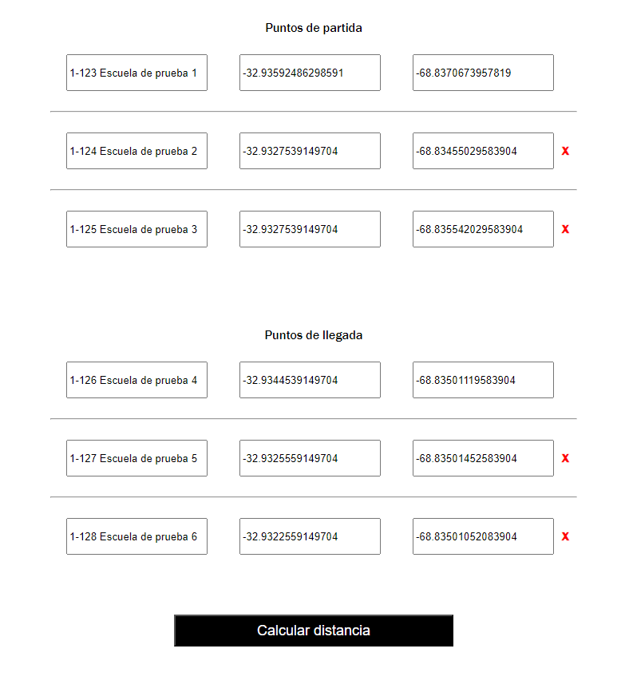
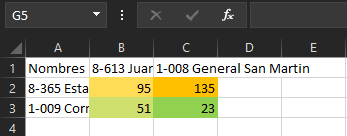

Ayuda
![]()
Ayuda
Cerrar

La aplicación utiliza coordenadas geográficas para calcular distancias entre puntos. Para cada lugar, debes asignar un nombre y proporcionar sus coordenadas (latitud y longitud). Estos datos se almacenarán para uso futuro.
Para encontrar coordenadas, utiliza Google Maps. Busca la dirección o nombre del lugar, por ejemplo, "Escuela 1-356 Victoriano Montes". Luego, sigue estos pasos:
1. Presiona el botón indicado para abrir el mapa completo.
2. Haz clic derecho en el punto rojo y selecciona la opción con las coordenadas (latitud y longitud) para copiarlas.
3. En la aplicación, pega las coordenadas en el campo de Latitud usando Ctrl + V o la opción de pegar del menú contextual.
Repite estos pasos para cada lugar que necesites agregar.
Para encontrar coordenadas, sin utilizar Google Maps. Busca la dirección o nombre del lugar, por ejemplo, "Escuela 1-356 Victoriano Montes". Luego, sigue estos pasos:
1. Buscar y abrir la página GEOdestinos Mendoza (Suele aparecer primera en las busquedas)
2. A diferencia de Google Maps, encontrarás las coordenadas debajo del mapa, deberás copiar cada una por separado y pegarla donde corresponda
3. En la aplicación, pega las coordenadas en el campo de Latitud usando Ctrl + V o la opción de pegar del menú contextual. Tenés que respetar el lugar, la latitud siempre en el campo del medio, es el valor cercano a -30, la longitud siempre en el casillero de la derecha siendo el valor más próximo a -60
Repite estos pasos para cada lugar que necesites agregar.
Los datos de partida se usan como referencia principal y aparecerán en cada fila del archivo Excel. Serán comparados con cada punto de llegada. Puedes organizarlos según tu preferencia, ya que los datos se generarán de la misma manera en el archivo Excel.
Una vez que hayas ingresado los datos:
1. Asegúrate de que estén todos los datos cargados, como se muestra en la imagen.
2. Presiona el botón "Calcular distancia" al final de la página.
3. Espera a que se genere el archivo Excel y se guarden los datos.
4. El archivo se guardará en la ubicación especificada con el nombre "distancias".
Al crear el excel, el programa lo que realiza es una línea recta entre 2 puntos, por lo tanto los números que da el excel son KILOMETROS aproximados. Esto sirve para filtrar las opciones entre todas, supongamos que necesitas comparar 100 escuelas pero obtener la más cercana, con esto vas a reducir la búsqueda a 5-10 opciones lo que te ahorarrá mucho tiempo
1) Marcar todos los números exceptuando los nombres
2) Buscar en el menú de inicio de excel la opción de "Formato Condicional"
3) Hacer click y buscar la opción "Nueva regla..."
4) En la ventana desplegada buscar la opción "Estilo de formato" y seleccionar "Escala de 3 colores"
Elegir la combinación de colores que más cómoda se te hagan, las que yo elegí marca las mínimas en verdes, las medianas en amarillo y las máximas en naranja, una vez elegidos los colores presionar el botón de "Aceptar"
6) Ahora los datos se ven en colores, lo que facilita encontrar los menores y de ahi filtrar distancias manualmente
Puntos de partida
Puntos de llegada
Aguarde un momento mientras se crea el archivo